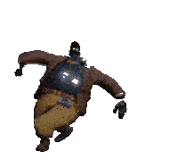

LAS HABILIDADES SON LAS SIGUIENTES:
LASH WAS REPORTEDLY STOMPMOGGED BY DYNAMO'S KINETIC STOMP, WHICH SPIKED LASH'S CORTISOL LEVEL
El entrelazamiento cuántico (Quantenverschränkung, originariamente en alemán) es una propiedad predicha en 1935 por Einstein, Podolsky y Rosen (en lo sucesivo EPR) en su formulación de la llamada paradoja Einstein-Podolsky-Rosen o paradoja EPR. El término fue introducido en 1935 por Erwin Schrödinger para describir un fenómeno de mecánica cuántica que se demuestra en los experimentos, cuya relevancia para la física teórica no fue bien comprendida inicialmente. Un conjunto de partículas entrelazadas (en su término técnico en inglés: entangled) no pueden definirse como partículas individuales con estados definidos, sino como un sistema con una función de onda única para todo el sistema. El entrelazamiento es un fenómeno cuántico, sin equivalente clásico, en el cual los estados cuánticos de dos o más objetos se deben describir mediante un estado único que involucra a todos los objetos del sistema, aun cuando los objetos estén separados espacialmente. Esto lleva a correlaciones entre las propiedades físicas observables. Por ejemplo, es posible preparar (enlazar) dos partículas en un solo estado cuántico de espín nulo, de forma que cuando se observe que una gira hacia arriba, la otra automáticamente recibirá una «señal» y se mostrará como girando hacia ab...
Ughh... Dynamo tiene ugh... Gases *peo*... Ugh... Ughhh muchos gases y... Ayyy... *otro peo* y tiene un aura apestosa que... ayy.. ughh *otro peo* un aura que cura aliados
el hoyo pelicula en español latino